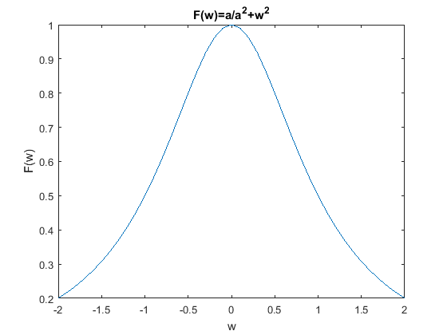
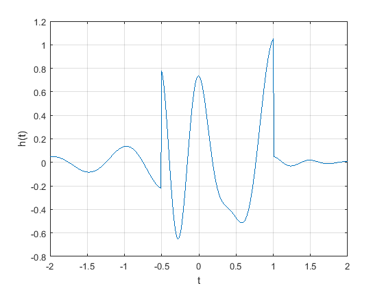

RPL02:Señales en tiempo continuo
GARCIA MORALES PABLO
FERNANDEZ SANTANA VIVIANA ELIZABETH
2MV1
Contents
Introduccion
MATLAB es un entorno de computación y desarrollo de aplicaciones totalmente integrado orientado para llevar a cabo proyectos en donde se encuentren implicados elevados cálculos matemáticos y la visualización gráfica de los mismos. MATLAB integra análisis numérico, cálculo matricial, proceso de señal y visualización gráfica en un entorno completo donde los problemas y sus soluciones son expresados del mismo modo en que se escribirian radicionalmente, sin necesidad de hacer uso de la programación tradicional. MATLAB dispone también en la actualidad de un amplio abanico de programas de apoyo especializados, denominados Toolboxes, que extienden significativamente el número de funciones incorporadas en el programa principal. Estos Toolboxes cubren en la actualidad prácticamente casi todas las áreas principales en el mundo de la ingeniería y la simulación, destacando entre ellos el 'toolbox' de proceso de imágenes, señal, control robusto,estadística, análisis financiero, matemáticas simbólicas, redes neurales, lógica difusa, identificación de sistemas, simulación de sistemas dinámicos, etc. es un entorno de cálculo técnico, que se ha convertido en estándar de la industria, con capacidades no superadas en computación y visualización numérica. Integra los requisitos claves de un sistema de computación técnico: cálculo numérico, gráficos, herramientas para aplicaciones especificas y capacidad de ejecución en múltiples plataformas. Esta familia de productos proporciona al estudiante un medio de carácter único, para resolver los problemas más complejos y difíciles.
ORIGEN
MATLAB nace como una solución a la necesidad de mejores y mas poderosas herramientas de calculo para resolver problemas de calculo complejos en los que es necesario aprovechas las amplias capacidades de proceso de datos de grandes computadores. El nombre MATLAB viene de "matrix laboratory" (laboratorio matricial). MATLAB fue originalmente escrito para proveer acceso fácil al softwarematricial desarrollado por los proyectos LINPACK y EISPACK, que juntos representan el estado del arte e software para computación matricial. Hoy MATLAB es usado en una variedad de áreas de aplicación incluyendo procesamiento de señales e imágenes, diseño de sistemas de control, ingeniería financiera e investigación médica. La arquitectura abierta facilita usar MATLAB y los productos que lo acompañan para explorar datos y crear herramientas personalizadas que proveen visiones profundas tempranas y ventajas competitivas.
Alternativas de software libre
GNU Octave GNU Octave puede ser la alternativa más conocida a MATLAB. En desarrollo activo durante casi tres décadas, Octave se ejecuta en Windows, Mac y Linux, y está empaquetado para la mayoría de las distribuciones principales. Si está buscando un proyecto que sea lo más parecido posible al lenguaje MATLAB real, Octave puede ser una buena opción para usted; se esfuerza por una compatibilidad exacta, por lo que muchos de sus proyectos desarrollados para MATLAB pueden ejecutarse en Octave sin necesidad de modificaciones. para mayor informacion entre al enlace https://www.gnu.org/software/octave/
Scilab Scilab es otra opción de código abierto para computación numérica que se ejecuta en todas las plataformas principales: Windows, Mac y Linux incluidos. Scilab es quizás la alternativa más conocida fuera de Octave, y (como Octave) es muy similar a MATLAB en su implementación, aunque la compatibilidad exacta no es un objetivo de los desarrolladores del proyecto http://www.scilab.org/
Sage SageMath es otro sistema de software de matemáticas de código abierto que podría ser una buena opción para aquellos que buscan una alternativa de MATLAB. Está construido sobre una variedad de conocidas bibliotecas de computación científica basadas en Python, y su propio lenguaje es sintácticamente similar a Python. Tiene muchas características que incluyen una interfaz de línea de comandos, cuadernos basados en navegador, herramientas para incrustar fórmulas en otros documentos y, por supuesto, muchas bibliotecas matemáticas http://www.sagemath.org/index.html
Desarrollo
function =func1(a,w) fw=(a/(a^2+w^2)); end
func2(1,-2:0.1:2);
func3(-1:0.1:5);
trans(-10:0.2:10);
M1.1
f = @(t) exp(-t).*cos(2*pi.*t); t=(-2:2); figure plot(t,f(t)); xlabel('t'); ylabel('f(t)'); grid; t = (-2:0.01:2); figure plot(t,f(t)); xlabel('t'); ylabel('f(t)'); grid;
M1.2
u = @(t) t>=0; t = (-2:2); figure plot (t,u(t)); xlabel('t'); ylabel('u(t)'); t = (-2:0.01:2); figure plot (t,u(t)); xlabel('t'); ylabel('u(t)'); axis ([-2 2 -0.1 1.1]); p = @(t) t>=0 & t<1; t = (-1:0.01:2); figure plot(t,p(t)); xlabel('t'); ylabel('p(t) = u(t)-u(t-1)'); axis ([-1 2 -.1 1.1]);

M1.3
g = @(t) exp(-t).*cos(2*pi.*t).*(t>=0); t = (-2:0.01:2); figure plot(t,g(2*t+1)); xlabel('t'); ylabel('g(2t+1)'); grid; figure plot(t,g(-t+1)); xlabel('t'); ylabel('g(-t+1)'); grid; figure plot(t,g(2*t+1) +g(-t+1)); xlabel('t'); ylabel('h(t)'); grid;
M1.4
x = @(t) exp(-t).*((t>=0)&(t<1)); t = (0:0.01:1); Ex = sum(x(t).*x(t)*0.01) x_squared = @(t) exp(-2.*t).*((t>=0)&(t>1)); Ex = quad(x_squared,0,1) g_squared = @(t) exp(-2*t).*((cos(2*pi*t)).^2).*(t>=0); t = (0:0.001:100); Eg = sum(g_squared(t)*0.001) Eg = quad(g_squared, 0,100)
Ex =
0.4367
Ex =
0
Eg =
0.2567
Eg =
0.2562
f1= @(t) -t.*((t<=0)&(t>-4))+t.*((t>=0)&(t<2)); t=(-8:0.2:8); figure plot(t,f1(t)); title('x(t)'); figure plot(t,f1(t-4)); title('x(t-4)'); figure plot(t,f1(t/1.5)); title('x(t/1.5)'); figure plot(t,f1(2*t-4)); title('x(2t-4)'); figure plot(t,f1(2-t)); title('x(2-t)');
6
%
7
Referencias
B.P.Lathi, Linear Systems and Signals , Oxford University Press, 2005, New York
Edison Del Rosario. (2017). Señales de Energía y Potencia. 29/10/18, de Wordpress Sitio web: http://blog.espol.edu.ec/telg1001/senales-de-energia-y-potencia/
Rafael Martinez Martinez. (2018). Practica 2: Señales continuas. 29/10/18, de MATLAB Sitio web: http://rafneta.github.io/Practica2ASySOctubre2018/Prac2ASySOctubre2018.html
Danilo Š?epanovi?. (2010). Variables, Scripts, and Operations. 29/10/18, de IAP Sitio web: https://ocw.mit.edu/courses/electrical-engineering-and-computer-science/6-094-introduction-to-matlab-january-iap-2010/lecture-notes/MIT6_094IAP10_lec01.pdf